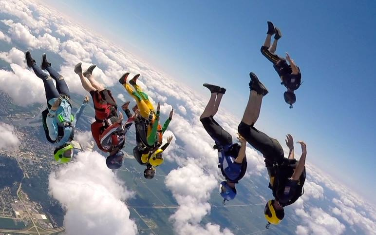

(TR) - Tracking (Angle-flying)
This discipline is fairly niche, although raising in popularity in recent years. Very different to both FS and FF as now you will not be fall directly down, there is horizontal movement therefore change is danger factors and things to think about before and during the jump. To those of us that love it, it feels like actually flying!

Requirements
- B-license, usually more the 50+ skydives and a number of other proficiencies needed for the license
- (FS) rating, this shows that you have learnt to fly relative to others safely at slower speeds ie) basics are well dialed in
- Free-fly 'friendly' rig, due to high speeds rigs that are not snug fit and tight around the container. This is not as important as FF but once you start flying faster and steeper angles the risk increase as always
- Audibles , this is an audio alti meter that sounds off at specified hieghts - this time more due to not being able to check your wrist altimeter due to orientation of body flying position.
How to get your (TR) rating
- Find a (TR) coach
- Get brief from coach on horizontal flying orientation,safety flying with others and complete proficiency jumps. (TR) can be done belly to earth or back to earth (backflying).
- Navigation, learn to plan your flight on the grond and be able to navigate well in the air, making changes where needed this is absolutely fundamental
- Learn to be a leader , angle flying requires someone that 'Leads' the rest of the group - navigating and setting the angle/speed of that jump
- Following, being able to get level and in slot and hold your slot throughout the jump
- Understand the dangers of weather conditions for navigating and other skydives happing on jump run.
- Comfortable controlling speed and angle
- Turning smoothly in slot
- Break-off heights
- CORRECT break-off procedure - giving enough space to all members of the skydive, barrel roll on heading to check air space
- Horizontal flight can get confusing, although at the beginning stages it is as technical as FF as you progress, adding more turns, angles and speeds makes airspace awareness and navigation so crucial, once you have a good understanding of the dangers, how to make good choices, when not to track and most importantly grasp correct navigation are you starting you TR journey.
- Your now ready to jump with others! Its recommended to keep to 2 or 3 ways until you are comfortable flying and navigating with others and once again all the above becomes second nature!